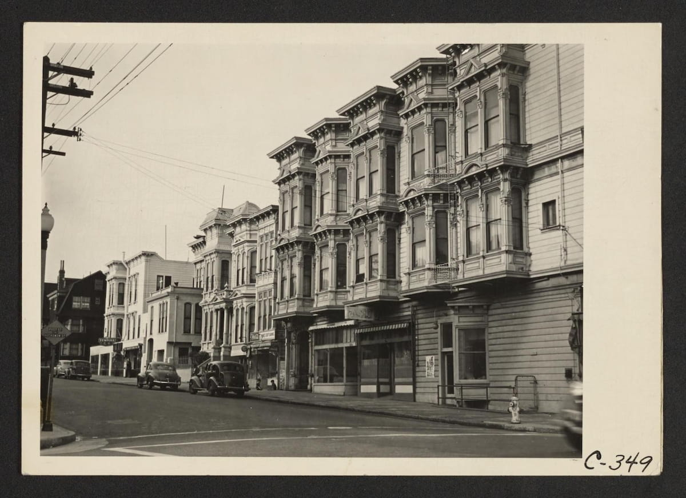

L2–L3 · The Neighborhood That Survived the Fire
The Fillmore became a destination by accident. The 1906 earthquake and fire leveled much of San Francisco, but Fillmore Street came through largely intact, so City Hall and the downtown department stores moved a mile west and set up shop there. What had been a quiet commercial street turned into the busiest part of the city almost overnight.
Because the neighborhood was cheap and open to people other districts turned away, it filled with Japanese, Jewish, Filipino, Mexican, and African American families. By 1935, the Western Addition was the only part of San Francisco where Black residents could reliably buy or rent a home. The first club in the Fillmore run by and for African Americans, Jack's Tavern, opened at 1931 Sutter Street in 1933, and the Club Alabam and the Town Club followed close behind.

The Japanese area became San Francisco's Harlem in a matter of months.
What changed the neighborhood was an order signed 3,000 miles away. In February 1942, Executive Order 9066 forced roughly 5,000 Japanese residents out of the Western Addition. Lange took the photograph above that April, weeks before the blocks in it emptied.
At the same moment, shipyards and defense plants around the Bay were hiring, and Black workers came west from the South in enormous numbers. San Francisco's Black population went from roughly 4,800 to 43,000 over the war decade, and many of those families moved into homes and shops the Japanese community had been forced to abandon. For the first time, the Fillmore was known as a Black district, and the clubs multiplied to match.
L3 · After Hours at Bop City
By the mid-1940s the Fillmore held around two dozen clubs and music joints inside roughly one square mile. The drummer Earl Watkins remembered blocks with four clubs on them, two to a side, and another cluster waiting two blocks over. Club Alabam faced the New Orleans Swing Club. Ella Fitzgerald sang at the Long Bar. Leola King ran the Blue Mirror.
Part of why the scene ran so deep was segregation. Touring musicians playing white venues elsewhere in the city often could not get a room near those venues, so they stayed in the Fillmore, and when the paid work ended they went looking for somewhere to play for themselves.
They found Jimbo Edwards. He had opened a waffle shop in a Victorian at 1690 Post Street and at the musicians' urging he put a stage in the back room. Bop City opened in late March 1949 with Dizzy Gillespie's orchestra and Sarah Vaughan, and it kept hours no ordinary club could: doors at two in the morning, closing at six, after everywhere else had shut. Admission was a dollar, and musicians got in free. Louis Armstrong and Charlie Parker met there exactly once, when Armstrong came by after his own concert and found Parker already playing.
L4 · Redevelopment and the Silence
The plan to clear the neighborhood was written before the scene reached its peak. A 1945 study called Blight and Taxes named the Western Addition a prime candidate for urban renewal, and it did so in openly racial terms, describing the district as an unfortunate blot while calling the Marina clean and bright. The federal Housing Act of 1949 supplied the machinery, and the San Francisco Redevelopment Agency began clearing what it had labeled a slum.
The first phase came with the widening of Geary. A second, far larger phase followed in 1963, adding roughly sixty more blocks to the zone. Thousands of Victorians came down, and thousands of residents left the city. Leola King lost the barbecue restaurant she had built, opened the Blue Mirror in 1953, and lost that too in 1962, each time to eminent domain and usually for a fraction of what the property was worth. Bop City closed in 1965.
The agency did issue Certificates of Preference, promising displaced families and businesses first claim on the rebuilt neighborhood. As of 2018, about one in five of the certificates awarded across San Francisco had been redeemed.
L5 · What the Neighborhood Kept
The house that held Bop City outlived the club. In the 1970s, as the agency cleared the blocks around it, the Victorian at 1690 Post Street was lifted off its foundation and moved two blocks west to 1712 Fillmore. The back room where the music happened did not survive the move. Marcus Books, the oldest Black-owned bookstore in the country, occupied the ground floor from 1980, and in February 2014 the city made the building a landmark for both histories at once.
The music never fully returned, and the sources disagree about why. The saxophonist John Handy blamed the rise of rock. Others pointed at the Redevelopment Agency. Elizabeth Pepin Silva has argued it was both, that tastes were shifting anyway, but that clearing the neighborhood took out its heart. By the end of the 1960s, jazz in the Western Addition was essentially gone. Only Jack's, the club that started it in 1933, lasted into the 1970s.
What remains is partly commemorative and partly alive. Plaques mark where the clubs stood. The Fillmore Jazz Festival has closed the street to cars every July since 1986 and draws tens of thousands of people. Churches in the neighborhood still hold jazz services. It is a smaller inheritance than the one that was cleared away, and it is not nothing.